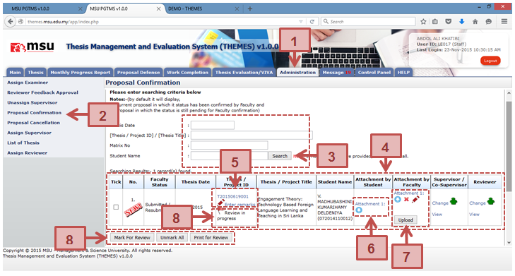
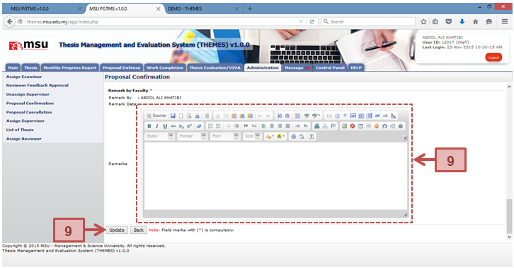
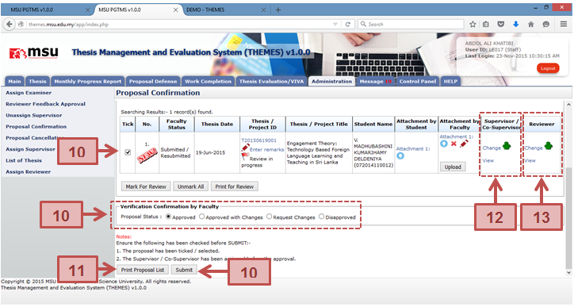
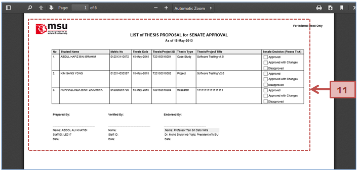

Proposal Confirmation page will list all the thesis proposal that being proposed by the Student to the Faculty for review and approval decision. At this stage the Faculty can also recommend the right Supervisor / Co-supervisor to supervise the student for their thesis including the Reviewer.




Figure 26: Administration Tab – Proposal Confirmation
Prerequisite
The student has submitted the thesis proposal to the Faculty.
Steps
- Click on the Administration tab on the system Top Panel section.
- Click on the Proposal Confirmation menu on the system Left Panel section.
- The searching page will be displayed on the Working Area section. Enter the searching criteria to find the specific result or just click the Search button to list all available result.
- The search result will be populated under the searching result table.
- Click the Thesis ID link if to view the detail of the thesis proposal.
- Click the attachment link if to download and view the attachment submitted by the student.
- Click Upload button if to upload the attachment related the thesis proposal. Once uploaded you have an option to remove it from the list.
- Before thesis proposal can be confirmed, the Faculty may need to forward the thesis proposal to the reviewer to get their feedback. Each of these thesis proposals which are being reviewed can be indicated via its status.
- Tick the respective checkbox and click on the Mark for Review button. The thesis proposal will be indicated as Review in Progress.
- Click Unmark All button if to remove the Review in Progress status from the list.
- Click on Print for Review button if to print the list for distribution to the identified Reviewer.
- This page will be displayed once you have clicked the Thesis ID link. You can enter your remarks here and click the Update button to save it.
- For thesis proposal confirmation,
- Tick the checkbox for the respective thesis
- Select the confirmation option Approved, Approved with Changes, Request Changes or Disapproved.
- Click the Submit button to confirm the thesis proposal status
- You can also print the list of thesis proposal via Print Proposal List button which the sample of PDF file is as shown above.
- Assign Supervisor can be done at any time. The steps to assign Supervisor can be referred to the Assign Supervisor section.
- Assign Reviewer can be before the thesis proposal is confirmed by the Faculty. The steps to assign Reviewer can be referred to the Assign Reviewer section.
Next Action
If the thesis proposal confirmation status is Approved or Approved with Changes then the Senate needs to confirm the status of thesis proposal too.
If the thesis proposal confirmation status is Request Changes then the Student need to amend it and resubmit back to the Faculty.
If the thesis proposal confirmation status is Disapproved then the Student need to resubmit a new thesis proposal to the Faculty.
Warning
The system will prompt a notification message if the thesis proposal confirmation status is unselected before the submission.
Note
None
Created with the Personal Edition of HelpNDoc: Full-featured EPub generator